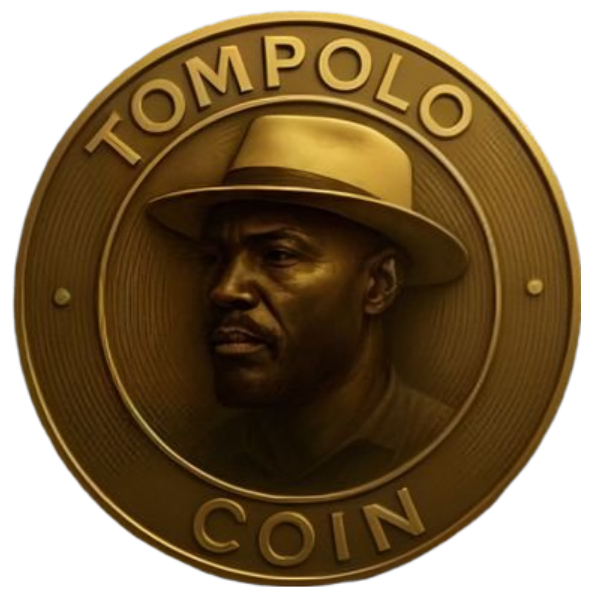

The Gold Standard of Meme Utility

Tompolo legacy is inspired by the legendary Government Ekpemupolo, a figure who commanded respect and influence in the Niger Delta. Just like him, this coin is built for strength, independence, and community power, a premium utility driven token built to combine staking, NFTs, governance, and ecosystem growth into a single sustainable platform designed for serious investors and community growth.
Holders gain access to a Stake-to-Earn mechanism that rewards long-term commitment.
The more you stake, the more you unlock. Long-term commitment = higher rewards.
As part of our community incentive program, Tompolo introduces a Business Support System:
Access is holder-based — the more committed you are, the more opportunities you unlock.
Holders gain exclusive access to the Tompolo NFT Collection, designed to reward early supporters.
NFT ownership enhances community engagement and unlocks unique privileges.
Participate in shaping the future of Tompolo through our community governance system.
Your voice directly impacts project direction.
Tompolo is building a scalable ecosystem with multiple future integrations:
Stay committed to maximize the benefits of the growing Tompolo ecosystem.
Tompolo NFTs are unique collectibles that unlock exclusive perks for holders. Stake, vote, and earn while showcasing your commitment to the Tompolo legacy.
Join our social channels and become part of the legacy.